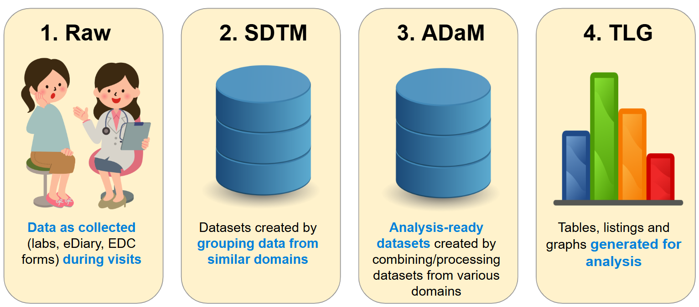
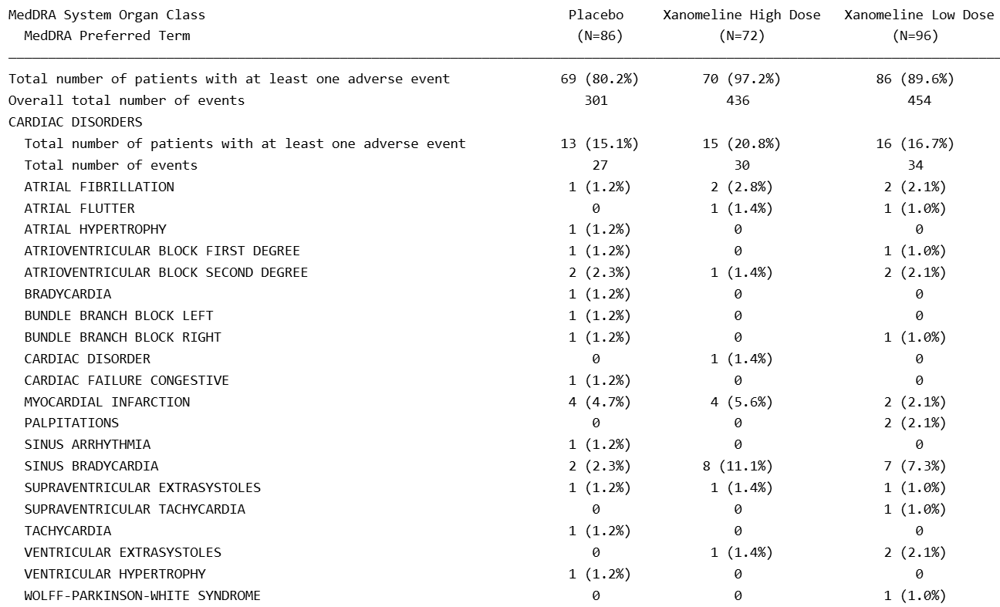
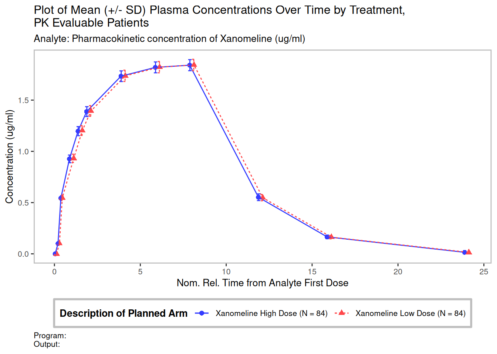

install.packages("pharmaversesdtm") # test data
install.packages("admiral") # tools for ADaM programming
install.packages("ggplot2") # plotsWorkshop for Ukraine
What we’ll do today:
Workshop materials
For slides, template and data, please see the workshop GitHub repo here.
We have a lot to cover!
| Time | Topic |
|---|---|
| 0:00 | Background: The clinical trial data journey |
| 0:20 | Focus for today: ADSL and ADVS datasets |
| 0:35 | Exercise 1 — ADSL derivations |
| 1:00 | Exercise 2 — ADVS: deriving MAP |
| 1:30 | Exercise 3 — Plotting MAP over time |
| 1:55 | Wrap-up and next steps |
The journey of a data point from a patient to a regulator’s report is long and complex! it can loosely be categorised into four stages:

Data enters a clinical trial from many sources:
Raw data is messy!
SDTM (Study Data Tabulation Model) groups similar, related data into domains. Here are some below.
| Domain | Contents |
|---|---|
DM |
Demographics |
VS |
Vital Signs |
LB |
Laboratory |
AE |
Adverse Events |
EX |
Exposure (drug dosing) |
E.g. the labs domain groups all the blood tests, urinalysis etc into one dataset.
Key features of SDTM
DM: one row per patientLB: one row per patient per lab test per visit;AE: one row per patient per adverse eventDM (Demographics) — one row per patient
| USUBJID Unique Subject Identifier |
AGE Age |
RACE Race |
COUNTRY Country |
ARM Description of Planned Arm |
|---|---|---|---|---|
| 01-701-1015 | 63 | WHITE | USA | Placebo |
| 01-701-1023 | 64 | WHITE | USA | Placebo |
| 01-701-1028 | 71 | WHITE | USA | Xanomeline High Dose |
| 01-701-1033 | 74 | WHITE | USA | Xanomeline Low Dose |
| 01-701-1034 | 77 | WHITE | USA | Xanomeline High Dose |
| 01-701-1047 | 85 | WHITE | USA | Placebo |
| 01-701-1057 | 59 | WHITE | USA | Screen Failure |
| 01-701-1097 | 68 | WHITE | USA | Xanomeline Low Dose |
| 01-701-1111 | 81 | WHITE | USA | Xanomeline Low Dose |
| 01-701-1115 | 84 | WHITE | USA | Xanomeline Low Dose |
EX (Drug Exposure) — one row per patient per dosing
| USUBJID Unique Subject Identifier |
EXTRT Name of Actual Treatment |
VISIT Visit Name |
EXSTDTC Start Date/Time of Treatment |
EXDOSE Dose per Administration |
|---|---|---|---|---|
| 01-701-1015 | PLACEBO | BASELINE | 2014-01-02 | 0 |
| 01-701-1015 | PLACEBO | WEEK 2 | 2014-01-17 | 0 |
| 01-701-1015 | PLACEBO | WEEK 24 | 2014-06-19 | 0 |
| 01-701-1023 | PLACEBO | BASELINE | 2012-08-05 | 0 |
| 01-701-1023 | PLACEBO | WEEK 2 | 2012-08-28 | 0 |
| 01-701-1028 | XANOMELINE | BASELINE | 2013-07-19 | 54 |
| 01-701-1028 | XANOMELINE | WEEK 2 | 2013-08-02 | 81 |
| 01-701-1028 | XANOMELINE | WEEK 24 | 2014-01-07 | 54 |
| 01-701-1033 | XANOMELINE | BASELINE | 2014-03-18 | 54 |
| 01-701-1034 | XANOMELINE | BASELINE | 2014-07-01 | 54 |
AE (Adverse Events) — one row per patient per adverse event
| USUBJID Unique Subject Identifier |
AEDECOD Dictionary-Derived Term |
AESER Serious Event |
AESEV Severity/ Intensity |
AESTDTC Start Date/ Time of Adverse Event |
|---|---|---|---|---|
| 01-701-1015 | APPLICATION SITE ERYTHEMA | N | MILD | 2014-01-03 |
| 01-701-1015 | APPLICATION SITE PRURITUS | N | MILD | 2014-01-03 |
| 01-701-1015 | DIARRHOEA | N | MILD | 2014-01-09 |
| 01-701-1023 | ATRIOVENTRICULAR BLOCK SECOND DEGREE | N | MILD | 2012-08-26 |
| 01-701-1023 | ERYTHEMA | N | MILD | 2012-08-07 |
| 01-701-1023 | ERYTHEMA | N | MODERATE | 2012-08-07 |
| 01-701-1023 | ERYTHEMA | N | MILD | 2012-08-07 |
| 01-701-1028 | APPLICATION SITE ERYTHEMA | N | MILD | 2013-07-21 |
| 01-701-1028 | APPLICATION SITE PRURITUS | N | MILD | 2013-08-08 |
VS (Vital Signs) — one row per patient per vital sign measurement
| USUBJID Unique Subject Identifier |
VSTESTCD Vital Signs Test Short Name |
VSORRES Result or Finding in Original Units |
VSORRESU Original Units |
VISIT Visit Name |
|---|---|---|---|---|
| 01-701-1015 | HEIGHT | 58.0 | IN | SCREEN 1 |
| 01-701-1015 | PULSE | 62 | BEATS/MIN | SCREEN 1 |
| 01-701-1015 | PULSE | 60 | BEATS/MIN | SCREEN 2 |
| 01-701-1015 | PULSE | 59 | BEATS/MIN | BASELINE |
| 01-701-1015 | PULSE | 61 | BEATS/MIN | WEEK 2 |
| 01-701-1015 | PULSE | 62 | BEATS/MIN | WEEK 4 |
| 01-701-1015 | PULSE | 56 | BEATS/MIN | WEEK 6 |
| 01-701-1015 | PULSE | 60 | BEATS/MIN | WEEK 8 |
| 01-701-1015 | PULSE | 53 | BEATS/MIN | WEEK 12 |
| 01-701-1015 | PULSE | 55 | BEATS/MIN | WEEK 16 |
| 01-701-1015 | PULSE | 59 | BEATS/MIN | WEEK 20 |
| 01-701-1015 | PULSE | 57 | BEATS/MIN | WEEK 24 |
| 01-701-1015 | PULSE | 61 | BEATS/MIN | WEEK 26 |
| 01-701-1023 | HEIGHT | 64.0 | IN | SCREEN 1 |
| 01-701-1023 | PULSE | 78 | BEATS/MIN | SCREEN 1 |
| 01-701-1023 | PULSE | 91 | BEATS/MIN | SCREEN 2 |
ADaM (Analysis Data Model) transforms and combines SDTM into datasets ready for statistical analysis.
The step from SDTM to ADaM can involve complex programming, as we are trying to set up the data to answer the questions about safety and efficacy that the clinical trial is posing, and this often involves combining domains.
A typical example
We may be interested in exploring whether patients are likely to have an adverse event after being exposed to the drug. So in ADAE (Adverse Event Analysis Dataset) we would compute the time since last dose for every adverse event - ready to then be used in a table/graph.
Key features of ADaM
SAFFL, flagging all patients who have received a dose of study drug).Today, we’ll start directly from the ADaM-building stage. For the first part of our exercises, we will be working with two ADaM datasets - ADSL (Subject level ADaM, derived from DM) and ADVS (Vital Signs ADaM, derived from VS).
ADSL (Subject-Level Analysis Dataset) — one row per subject (derived from DM, DS, AE, etc.)
| USUBJID Unique Subject Identifier |
AGE Age |
SEX Sex |
RACE Race |
TRT01A Actual Treatment for Period 01 |
AGEGR1 Pooled Age Group 1 |
SAFFL Safety Population Flag |
RANDDT Date of Randomization |
TRTSDTM Datetime of First Exposure to Treatment |
TRTEDTM Datetime of Last Exposure to Treatment |
DTHDT Date of Death |
|---|---|---|---|---|---|---|---|---|---|---|
| 01-701-1015 | 63 | F | WHITE | Placebo | 18-64 | Y | 2014-01-02 | 2014-01-02 | 2014-07-02 23:59:59 | NA |
| 01-701-1023 | 64 | M | WHITE | Placebo | 18-64 | Y | 2012-08-05 | 2012-08-05 | 2012-09-01 23:59:59 | NA |
| 01-701-1028 | 71 | M | WHITE | Xanomeline High Dose | >64 | Y | 2013-07-19 | 2013-07-19 | 2014-01-14 23:59:59 | NA |
| 01-701-1033 | 74 | M | WHITE | Xanomeline Low Dose | >64 | Y | 2014-03-18 | 2014-03-18 | 2014-03-31 23:59:59 | NA |
| 01-701-1034 | 77 | F | WHITE | Xanomeline High Dose | >64 | Y | 2014-07-01 | 2014-07-01 | 2014-12-30 23:59:59 | NA |
| 01-701-1047 | 85 | F | WHITE | Placebo | >64 | Y | 2013-02-12 | 2013-02-12 | 2013-03-09 23:59:59 | NA |
| 01-701-1057 | 59 | F | WHITE | Screen Failure | 18-64 | N | NA | NA | NA | NA |
| 01-701-1097 | 68 | M | WHITE | Xanomeline Low Dose | >64 | Y | 2014-01-01 | 2014-01-01 | 2014-07-09 23:59:59 | NA |
| 01-701-1111 | 81 | F | WHITE | Xanomeline Low Dose | >64 | Y | 2012-09-07 | 2012-09-07 | 2012-09-16 23:59:59 | NA |
| 01-701-1115 | 84 | M | WHITE | Xanomeline Low Dose | >64 | Y | 2012-11-30 | 2012-11-30 | 2013-01-23 23:59:59 | NA |
ADAE (Adverse Events Analysis Dataset) — one row per patient per adverse event (derived from AE + ADSL + EX)
| USUBJID Unique Subject Identifier |
TRT01A Actual Treatment for Period 01 |
TRTSDTM Treatment Start Datetime |
AEDECOD Dictionary-Derived Term |
AESTDTC Start Date/Time of Adverse Event |
AESER Serious Event |
AESEV Severity/ Intensity |
ASTDY Analysis Start Relative Day |
TRTEMFL Treatment Emergent Flag |
LDOSEDTM (Dummy) Last Dose Datetime |
|---|---|---|---|---|---|---|---|---|---|
| 01-701-1015 | Placebo | 2014-01-02 | APPLICATION SITE ERYTHEMA | 2014-01-03 | MILD | N | 2 | Y | 2014-01-02 23:59:59 |
| 01-701-1015 | Placebo | 2014-01-02 | APPLICATION SITE PRURITUS | 2014-01-03 | MILD | N | 2 | Y | 2014-01-02 23:59:59 |
| 01-701-1015 | Placebo | 2014-01-02 | DIARRHOEA | 2014-01-09 | MILD | N | 8 | Y | 2014-01-08 23:59:59 |
| 01-701-1023 | Placebo | 2012-08-05 | ERYTHEMA | 2012-08-07 | MODERATE | N | 3 | Y | 2012-08-06 23:59:59 |
| 01-701-1023 | Placebo | 2012-08-05 | ERYTHEMA | 2012-08-07 | MILD | N | 3 | Y | 2012-08-06 23:59:59 |
ADVS (Vital Signs Analysis Dataset) — one row per patient per parameter per visit (derived from VS and ADSL)
| USUBJID Unique Subject Identifier |
TRT01A Actual Treatment for Period 01 |
PARAMCD Parameter Code |
PARAM Parameter |
DTYPE Derivation Type |
AVISIT Analysis Visit |
AVISITN Analysis Visit (N) |
ABLFL Baseline Record Flag |
AVAL Analysis Value |
BASE Baseline Value |
CHG Change from Baseline |
|---|---|---|---|---|---|---|---|---|---|---|
| 01-701-1015 | Placebo | DIABP | Diastolic Blood Pressure (mmHg) | NA | Baseline | 0 | Y | 51 | 51 | 0 |
| 01-701-1015 | Placebo | SYSBP | Systolic Blood Pressure (mmHg) | NA | Baseline | 0 | Y | 121 | 121 | 0 |
| 01-701-1015 | Placebo | MAP | Mean Arterial Pressure | DERIVED | Baseline | 0 | Y | 86 | 86 | 0 |
| 01-701-1015 | Placebo | DIABP | Diastolic Blood Pressure (mmHg) | NA | Week 2 | 2 | NA | 50 | 51 | -1 |
| 01-701-1015 | Placebo | SYSBP | Systolic Blood Pressure (mmHg) | NA | Week 2 | 2 | NA | 121 | 121 | 0 |
| 01-701-1015 | Placebo | MAP | Mean Arterial Pressure | DERIVED | Week 2 | 2 | NA | 85.5 | 86 | -0.5 |
| 01-701-1015 | Placebo | DIABP | Diastolic Blood Pressure (mmHg) | NA | Week 4 | 4 | NA | 55 | 51 | 4 |
| 01-701-1015 | Placebo | SYSBP | Systolic Blood Pressure (mmHg) | NA | Week 4 | 4 | NA | 137 | 121 | 16 |
| 01-701-1015 | Placebo | MAP | Mean Arterial Pressure | DERIVED | Week 4 | 4 | NA | 96 | 86 | 10 |
The final TLGs (tables, listings and graphs) that answer questions about the trial’s safety and efficacy. These are provided to regulators and used in publications.
There are lots of packages to choose from!
Many different R packages can be used to produce TLGs. Here are some TLG examples and the packages you could use to make them.
| Example Contents | Common R packages | |
|---|---|---|
| Tables | Demographics, AE counts, lab shifts | {gtsummary}, {rtables} |
| Listings | Individual patient data, AE narratives | {flextable}, {gt} |
| Graphs | Biomarkers over time, KM curves, forest plots | {ggplot2} |
In today’s workshop’s last exercise, we will focus on creating a vital signs plot.


We are using the CDISC Pilot Study — a realistic synthetic dataset maintained by the pharmaverse.
Pre-built datasets in data/:
adsl.RDS — Subject-level dataset (one row per patient)advs.RDS — Vital signs dataset (one row per subject × parameter × visit)One row per subject — the backbone of every analysis.
Key variables:
| Variable | Description |
|---|---|
USUBJID |
Unique subject identifier |
AGE, SEX, RACE |
Demographics |
TRT01A |
Actual treatment arm |
TRTSDT / TRTEDT |
Treatment start / end date |
AGEGR1 |
Age group (categorical) |
SAFFL |
Safety population flag |
One row per subject × parameter × visit (BDS structure).
Key variables:
| Variable | Description |
|---|---|
PARAMCD |
Parameter code (e.g. "SYSBP") |
PARAM |
Parameter label |
AVAL |
Analysis value |
ADT |
Analysis date |
ADY |
Study day |
AVISITN / AVISIT |
Visit number / label |
TRTA |
Treatment arm |
ADVS is built from the VS (Vital Signs) SDTM domain. Each row is one measurement for one subject at one timepoint.
Key columns you will use today:
| Column | Contents | Example |
|---|---|---|
VSTESTCD |
Short code for the test | "SYSBP", "DIABP", "PULSE" |
VSSTRESN |
Numeric result | 118, 76 |
VSSTRESU |
Unit of measurement | "mmHg" |
VSSTAT |
Completion status | "NOT DONE" if skipped |
VISIT |
Visit name | "BASELINE", "WEEK 2" |
VSTPTNUM |
Timepoint number within a visit | identifies replicates |
VSSTAT == "NOT DONE"Warning
When VSSTAT == "NOT DONE", the measurement was planned but not collected — VSSTRESN is blank.
Always exclude these records before computing derived parameters like MAP, otherwise the calculation will produce NA.
You will apply this filter in Exercise 2a when calling derive_param_map().
{admiral} is the pharmaverse package for building ADaM datasets in R.
Core idea: a chain of derive_*() functions, each adding variables or rows.
Today you will use:
mutate() + case_when() — categorise continuous variablesderive_var_merged_exist_flag() — create Y/N flags from another datasetderive_param_map() — derive Mean Arterial Pressurederive_param_computed() — derive any custom computed parameter{admiral}: exprs() and by_varsexprs() captures column names as unevaluated R expressions — {admiral}’s equivalent of dplyr’s vars().
by_vars defines the grouping key for a derivation — the set of columns that uniquely identify one “unit” (e.g. one subject × one timepoint).
The !!! (triple-bang) splices a pre-defined list into exprs():
Tip
You will see exprs() and by_vars in every {admiral} function today. The pattern is always the same — list the columns that make a row unique in the context of that derivation.
Open templates/ad_adsl.R
Task: Add a variable AGEGR2 with the following groups:
| Condition | Value |
|---|---|
AGE < 40 |
"<40" |
40 ≤ AGE ≤ 65 |
"40-65" |
AGE > 65 |
">65" |
Tip
between(x, lo, hi) is equivalent to x >= lo & x <= hi
Task: Flag patients who have any systolic BP > 160 mmHg: HISOBPFL = "Y" / "N"
# derive_var_merged_exist_flag() checks a condition in another dataset
# and merges the result back as a Y/N flag
adsl <- adsl %>%
derive_var_merged_exist_flag(
dataset_add = vs, # look in the raw VS data
by_vars = exprs(STUDYID, USUBJID),
new_var = HISOBPFL, # new column name
condition = VSTESTCD == "SYSBP" & VSSTRESN > 160,
false_value = "N",
missing_value = "N"
)Tip
exprs() is {admiral}’s way of passing a list of column names as expressions.
Open templates/ad_advs.R
derive_param_map()Mean Arterial Pressure is a derived parameter — it is calculated from two collected parameters (SBP and DBP).
\[\text{MAP} = \frac{2 \times \text{DBP} + \text{SBP}}{3}\]
{admiral} provides a dedicated function for this common derivation:
Note
by_vars defines the variables that uniquely identify one timepoint for one subject. {admiral} uses these to find the SBP and DBP rows that belong together before computing MAP. The new MAP row inherits these same by_vars values.
Warning
Without filter = VSSTAT != "NOT DONE" | is.na(VSSTAT), uncollected measurements are passed to the formula and produce NA.
Task: Add MAP rows to the advs dataset using derive_param_map().
Use the hint in the template. Key things to fill in:
by_vars — already shown in the hint, copy it exactlyset_values_to = exprs(PARAMCD = "MAP") — this links to the lookup tablefilter — exclude “NOT DONE” recordsderive_param_computed()For any formula not built into {admiral}, use derive_param_computed().
Source parameter values are referenced as AVAL.<PARAMCD>:
advs <- advs %>%
derive_param_computed(
by_vars = exprs(STUDYID, USUBJID, !!!adsl_vars,
VISIT, VISITNUM, ADT, ADY, VSTPT, VSTPTNUM),
parameters = c("SYSBP", "DIABP"), # which params to combine
set_values_to = exprs(
AVAL = (AVAL.SYSBP + AVAL.DIABP) / 2, # your formula
PARAMCD = "MAPV2"
# PARAM is added at the end by the param_lookup merge
)
)Tip
parameters tells {admiral} which PARAMCD rows to “pivot wide” so you can reference AVAL.SYSBP and AVAL.DIABP in the formula. One new row is created for each subject × timepoint where both are present.
Task: Derive an alternative MAP using the arithmetic mean:
\[\text{MAPV2} = \frac{\text{SBP} + \text{DBP}}{2}\]
Use derive_param_computed() with parameters = c("SYSBP", "DIABP").
Inside set_values_to: - AVAL = (AVAL.SYSBP + AVAL.DIABP) / 2 - PARAMCD = "MAPV2" - PARAM = "Mean Arterial Pressure V2 (mmHg)"
Note
This formula is intentionally simplified for the exercise. In practice, you would use a clinically validated alternative formula.
Open templates/g_vs_map.R
Common geoms:
geom_line() — line graphgeom_point() — scatter / dotgeom_bar() — bar chartgeom_boxplot() — box plotCommon themes:
theme_bw() — white backgroundtheme_minimal() — minimal gridtheme_classic() — no grid linesTask: Create two plots of mean MAP/MAPV2 over time, restricted to patients aged >65.
Step 1 — Summarise (one mean per visit × treatment arm):
Step 2 — Plot:
Repeat for PARAMCD == "MAPV2".
Key things to notice:
filter(PARAMCD == ...) changesadvs_plot join stepThe pipeline:
ADSL vs BDS:
{admiral} patterns you used:
mutate() + case_when() — categorise any continuous variablederive_var_merged_exist_flag() — cross-dataset Y/N flagsderive_param_map() — built-in MAP derivationderive_param_computed() — any custom computed parameterPharmaverse — the R ecosystem for clinical reporting:
{admiral} — ADaM datasetspharmaversesdtm — example SDTM datagtsummary — summary tablestfrmt — clinical table formattingrtables — production-grade table engineCDISC standards:
Questions? Feedback?
Tip
The full solutions are in the solutions/ folder — run them top-to-bottom to see the complete pipeline.
Clinical Programming in R — Workshop for Ukraine - Edoardo Mancini